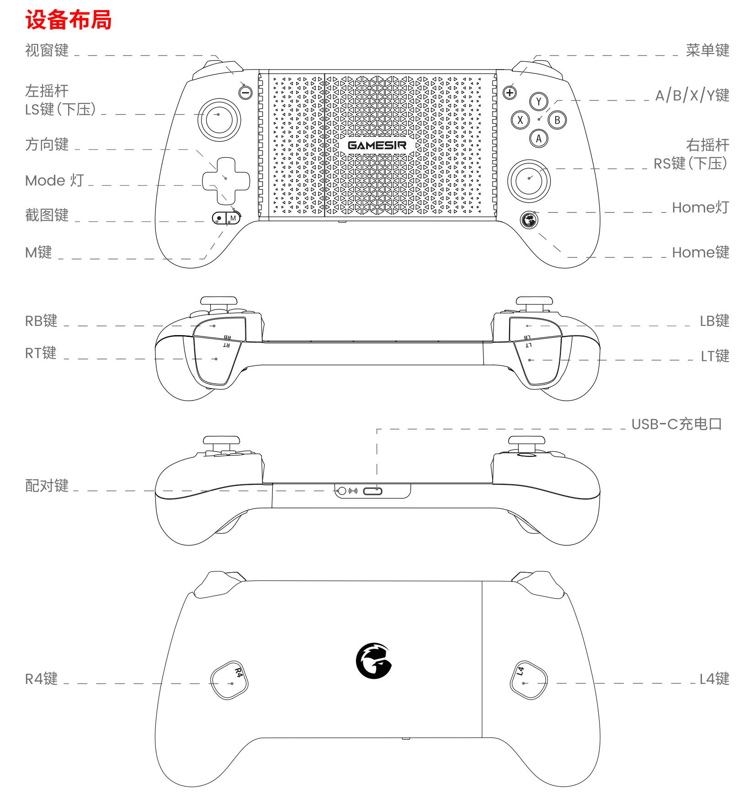

地铁上挤了四十分钟，我的手机终于像个游戏机了
早高峰的地铁里触屏打游戏有多狼狈？同事塞给我一个拉伸手柄，装了小鸡游戏世界之后，我才知道手游原来还能这么玩。
那个被汗水糊住屏幕的早晨
早高峰的 13 号线永远是一场混战。我斜靠在车门旁的立柱上，一只手勉强举着手机，另一只手指尖在屏幕上飞速划动——屏幕上沾了一晚上没擦干净的油膜，再加上车厢里飘过来的地铁空调风带来的湿气，触屏灵敏度时灵时不灵。
这一局《和平精英》打到决赛圈，我蹲在树后面瞄准，右手食指按射击键的同时想挪一下视角，结果两个动作叠在一起，手指滑出了屏幕边缘。等我回过神来，已经被人从侧面打了个背身。
"又死了？"旁边传来一声笑。
我侧头看，是坐我旁边的老张，他手里攥着个巴掌大的东西，手柄两端能拉伸，卡在他手机上。键位密密麻麻，但他操作起来毫不费力，拇指在摇杆上推来推去，时不时按一下背后的凸起。
"你那触屏打竞技不闹心？"他把手里的东西晃了晃，"这是 G8 射手座，gamesir官网出品的，配小鸡游戏世界那软件，地铁上玩了俩礼拜了。"
从"激活一下"到"直连直玩"
我对游戏手柄的印象还停留在几年前——装个驱动、激活一下、悬浮窗飘在上面挡视野、某些游戏还识别得出来不让用。抱着试试看的心态，我让老张从gamesir下载帮我拿了个安装包。
下载完打开 App，界面意外地干净。外设管理页在最显眼的位置，蓝牙一开，手柄开机，几秒钟就出现在列表里——电量 60%，固件版本最新，连校准都不用。然后我就卡在了一个熟悉的环节：它需要给手机开无障碍权限，用来做悬浮窗映射对吧？
但老张点了几下，出来一个叫 G-Touch 的选项。
"开这个，比悬浮窗爽十倍。"
隐身的好处是所有人都看不见你（除了队友）
这是我这两周对小鸡游戏世界最深的体会。G-Touch 直连的原理说穿了很简单：App 配置完之后，手机上模拟出一个虚拟的触摸外设——手柄发出的指令全部被识别成系统级触摸信号。
翻译一下就是：游戏根本不知道我在用手柄。
没有悬浮窗挡在键位上，没有游戏弹"检测到外设连接"的提示框，不需要云适配，甚至不用管游戏支不支持手柄。我进《和平精英》，开 G-Touch 模式，直接用摇杆走了两步，按下射击键，整个过程跟直接在屏幕上点戳没有任何区别——区别只是我手里握着一个有实体键的东西。

以前我总觉得"手柄直连"是给硬核玩家准备的东西，直到自己用了才明白：它解决的是最朴素的问题——触屏打久了手指疼，而且在地铁上，手抖、屏幕出汗、误触边缘，这些都是触屏天生绕不开的缺陷。
那些藏在组合键里的小细节
让我真正被种草的不是 G-Touch 本身，而是那些用起来才知道方便的小设计。
手柄支持组合键调音量。以前打竞技局总在调音量上吃亏：脚步太小听不见，队友麦声太大盖过枪声，得中途退到系统设置里翻。现在 M 键加十字键上下就能调主音量，M 键加左右一边调高游戏音量一边压低通知声——戴耳机的竞技局和地铁上随手玩的场景，几下就切到位。
背键也有用。G8 背后那两个凸起键我一开始没理会，直到老张说"你试试把下蹲和趴下绑到背键上"。低头的瞬间就能完成动作，右手食指不用离开摇杆，这在快节奏对掏的时候差着一个身位的距离。
还有宏录制——去gamesir文档查了一下才弄明白，这是小鸡游戏世界 2025 年末正式上线的功能，录一遍你想重复的操作序列（比如一套连续技能），绑到一个键上，之后一键触发。我玩的某款 RPG 手游里有一套五连技能，每次手动按总要错开半拍，录成宏之后按一下就出来。
不是手柄的问题，是没找对玩法
用了一个礼拜之后我发现，小鸡游戏世界的价值不在"把触屏变成手柄"这件事本身——这是基础功能，几乎所有手柄 App 都能做到。它真正让我觉得用心的地方是：
产品线铺得宽。 从拉伸手柄到无线手柄到有线手柄，甚至连散热器这种周边都有配套管理。老张用的是 G8 射手座 Type-C 版，我在闲鱼上淘了个二手的 X2s，两个手柄插同一个 App 都能识别，配置档案还能存多份——通勤用一份，周末在家连平板用另一份。
版本更新有节奏。 2024 年 5.0 大改版把界面和外设管理全重做了一遍，横屏下直接能用手柄操控导航，不用掏手机戳。2025 年陆陆续续加了新机型支持，年底宏录制上线，把一个"配置工具"往"能分享连招的小社区"方向推了一步。
有些限制得提前知道。 G-Touch 直连对处理器有门槛，部分联发科、天玑平台不支持，安卓 9.0 以下也不行。还有一个细节：直连模式下摇杆和触屏不能同时用——玩某些需要同时用摇杆走路、触屏放技能的游戏，可能得切回悬浮窗映射，或者把触屏上的动作也映射到手柄键上。
到站了，该收工了
今天地铁里人不多，我握着 G8 打完了整整四局，从青铜三冲到了青铜一。到站的时候把手柄从手机上摘下来塞进背包侧袋，顺手把 App 里的音量档位改回中档——下班路上可能还要用。
这不是什么颠覆性的体验升级，但在通勤每天四十分钟、地铁上无聊到抠手机的日子里，这个不到巴掌大的小东西加一个 App，把一段原本用来刷短视频的时间，变成了一段真的能"玩"会儿游戏的时间。
有时候技术的进步就是这样：不是在创造什么新东西，而是把原来不方便的事，变方便一点点。小鸡游戏世界的安装包和这套说明，我在GitHub、Gitee和GitCode三个仓库都同步了。